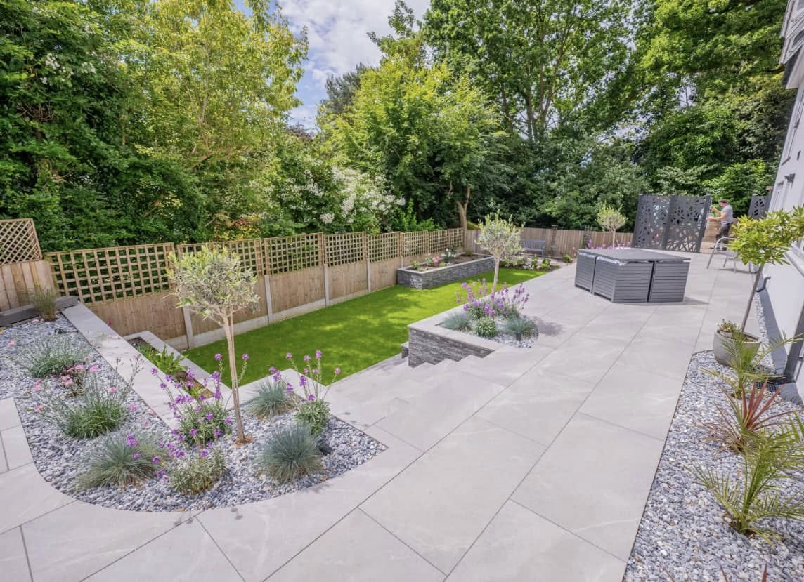
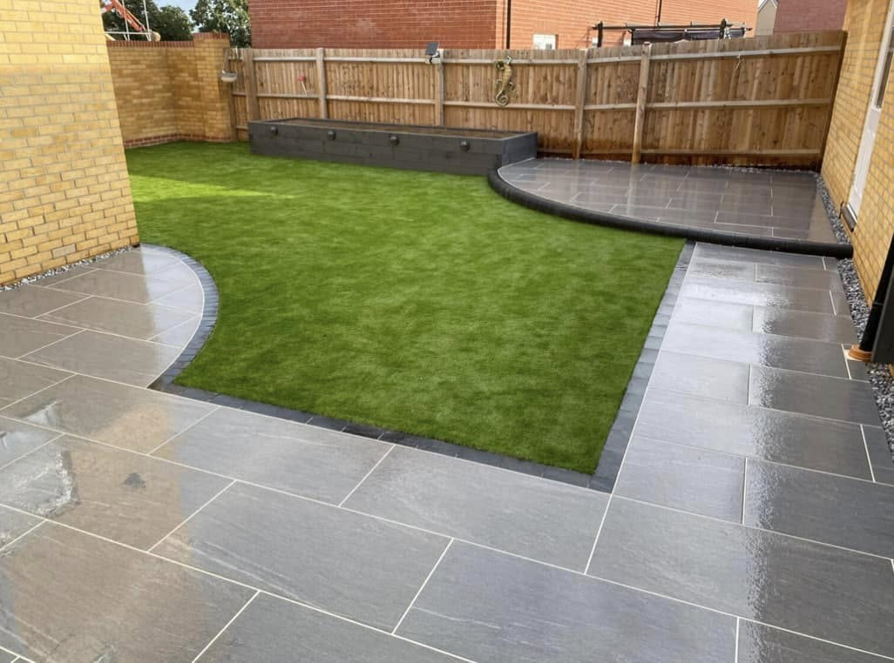
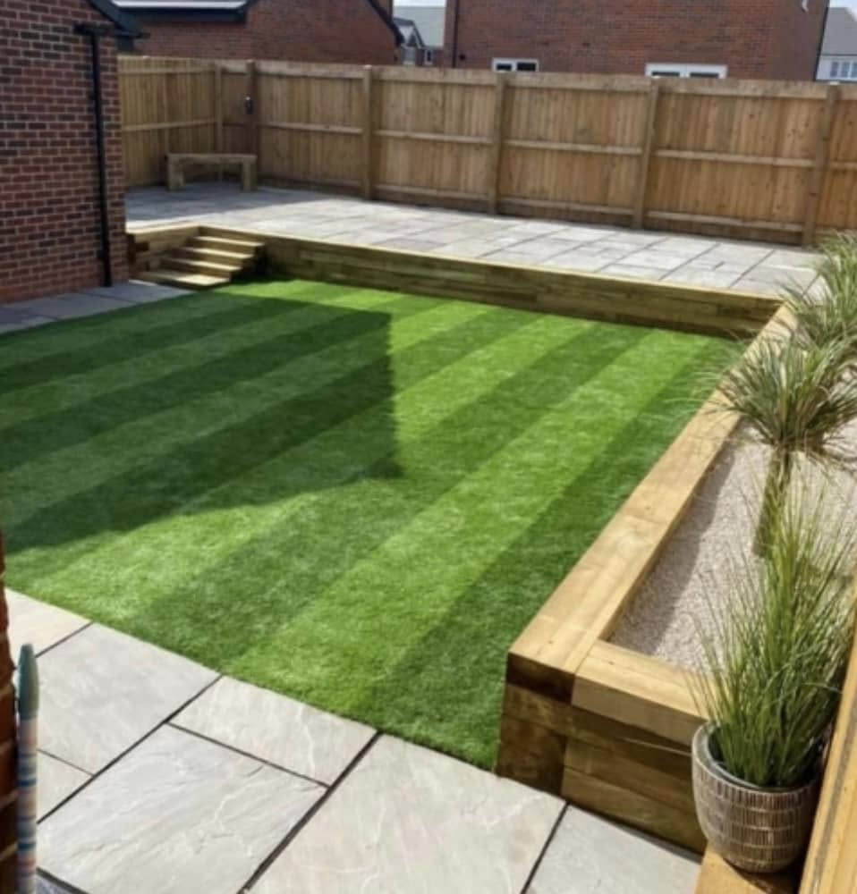
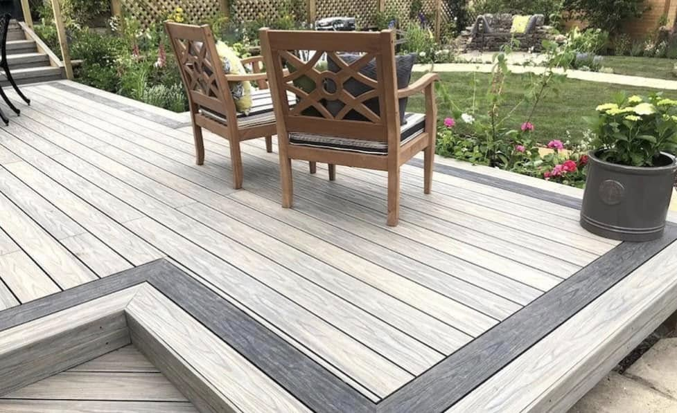
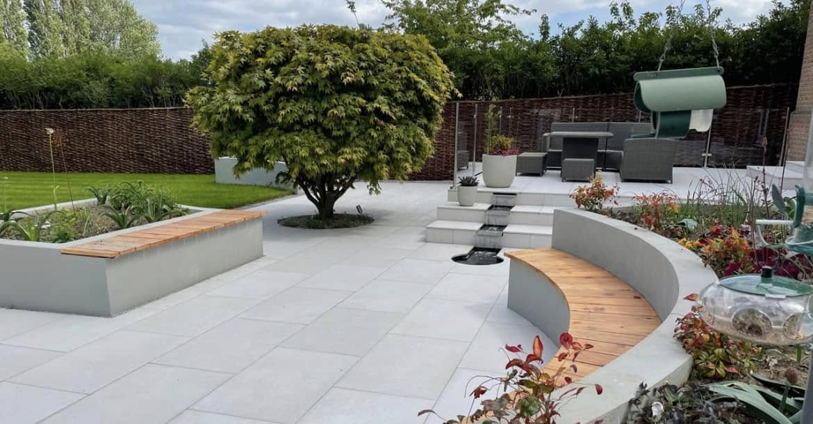
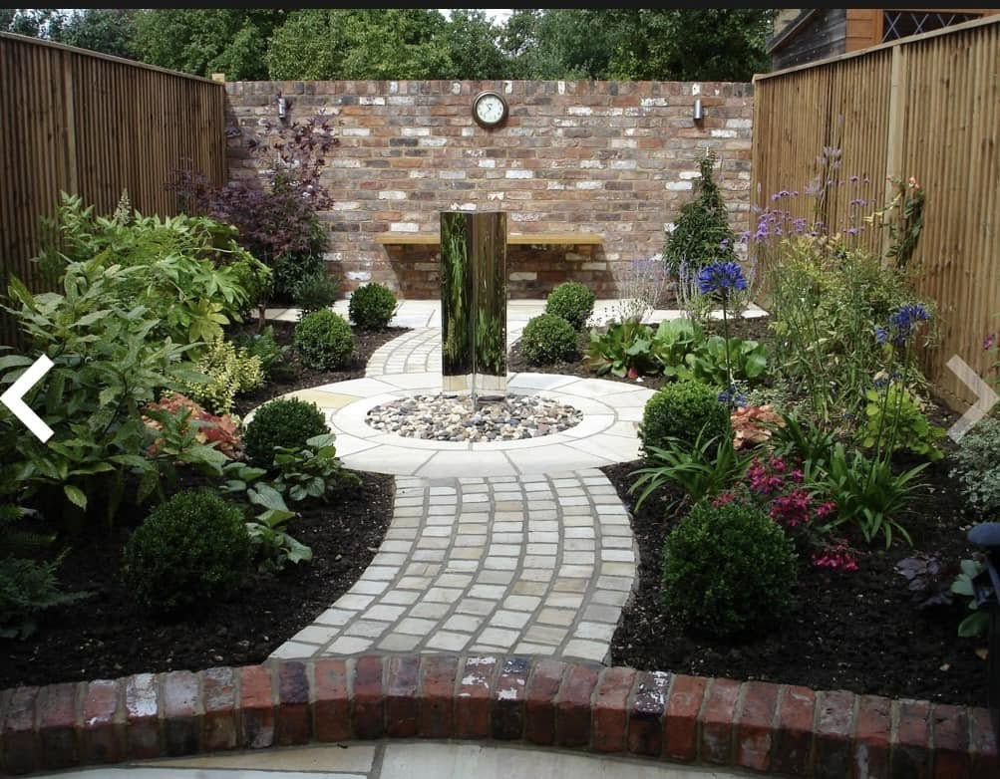
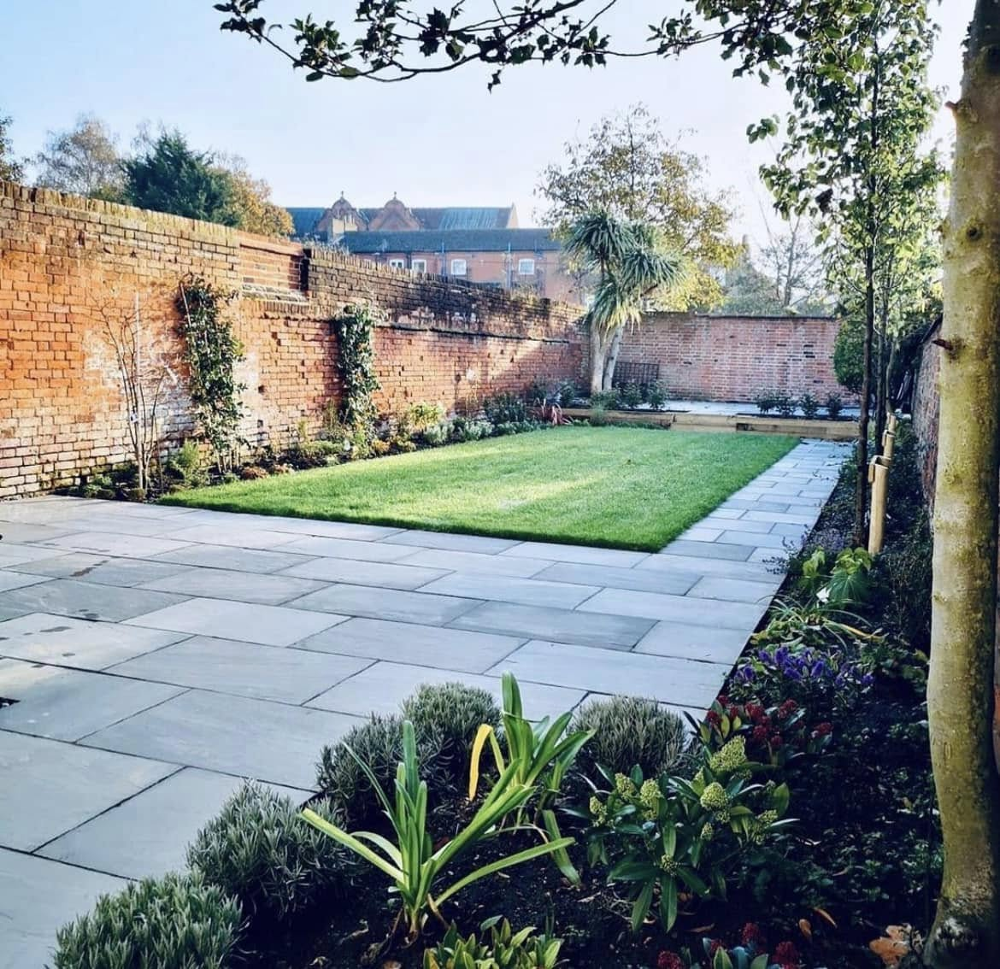

Over 25 years, we've transformed hundreds of gardens across Farnborough and Hampshire. Here's a selection of the projects we're most proud of.

Large-format porcelain patio, raised granite-capped walls, olive trees in gravel borders, artificial lawn and a dedicated hot tub terrace with lattice trellis screening.

Blue-grey slate paving laid in a flowing curved layout, complemented by a lush artificial lawn with sweeping edges and granite-capped raised planter beds.

Sandstone paving on the lower tier with steps rising to a lush raised lawn, flanked by chunky timber sleeper beds and a matching upper patio entertaining area.

Low-maintenance composite decking in a warm silver-grey finish with a contrasting charcoal border frame and integrated corner steps — zero rot, zero splinters, lasting decades.

One of our most ambitious projects — a sweeping, architect-inspired garden design featuring white porcelain paving across two levels, curved rendered seating walls with cedar timber bench inserts, a stainless steel blade water feature, a specimen tree as the centrepiece, and rich planted borders all round. This is the kind of outdoor space people stop and stare at.

A beautifully executed circular garden centred on a stainless steel columnar water feature, framed by sandstone block-paved pathways, shaped box hedging and richly planted cottage-style borders against a warm brick backdrop.

A large, characterful walled garden brought back to life with charcoal slate paving, a crisp central lawn, generous planted borders and carefully positioned specimen trees to frame the space.
Every garden above started with a conversation. Here's the thinking behind how we approach this kind of work.
The full garden transformation you see at the top of this page is a good example of what we mean when we say we think about a garden properly before we build anything. That project involved five distinct elements — a large-format porcelain patio, raised planted borders framed with capped walling, a dedicated hot tub terrace with trellis privacy screening, a lawn area anchored by olive trees in gravel, and fencing that pulled the whole thing together visually. None of those elements were an afterthought. Every material, every level change and every planting zone was planned to work together as one space rather than a collection of separate features. That's what distinguishes a garden that feels designed from one that was just built.
Porcelain paving is something we've worked with extensively over the years, and the reason we recommend it for most projects is simple: it looks exceptional and it lasts. When you see a large-format 900×600mm tile laid with tight butt joints, it transforms the feel of a space in a way that smaller paving simply can't match. The key is the groundwork underneath — a properly compacted sub-base with the right falls, mechanically vibrated and checked with a straight edge before a single tile goes down. We've re-laid too many patios that other contractors installed incorrectly. When we lay a patio, we do it once.
The second project in our portfolio shows a different approach — blue-grey slate paving with curved edges that echo the shape of the artificial lawn behind. Slate is a denser, harder material than sandstone and has that deep, dark colour that works brilliantly against light-coloured rendered walls and modern brick. The challenge with slate is that it can be unforgiving if laid incorrectly — the weight of the slabs and their density means any movement in the base will cause cracking or edge chipping over time. We always mechanically tamp slate projects and allow adequate curing time before the space is used.
Sandstone is warmer and more textured. The third project here used Indian sandstone with a calibrated finish — consistent thickness for a professional lay — and the result is a garden that feels comfortable and relaxed rather than stark. The raised lawn and timber sleeper beds in that project were designed for a young family who wanted a practical garden that would evolve as the children grew. The raised lawn sits about 600mm above the lower patio level, connected by simple stone steps, and creates a clear visual separation between the play area and the adult entertaining space.
We install a significant amount of composite decking every year, and the product has improved enormously over the past decade. The project shown here uses a silver-grey composite board with a contrasting charcoal border frame — a detail that makes a huge difference to how the finished deck looks. Without a defined border, composite decking can look slightly unfinished. With it, the whole thing reads as a considered, intentional space. Composite is the right choice when clients have busy lives and don't want to think about their garden maintenance. No oiling, no sanding, no sealing. Just an occasional brush-down and the deck stays looking the same for 25 years or more. We only install from manufacturers whose products we trust, and we always ensure the subframe is built correctly — composite is only as good as the frame it sits on.
The curved garden design project is one we're particularly proud of because it demonstrates what happens when you give a garden a proper focal point. The water feature — a simple, clean stainless steel blade that catches light and creates gentle movement — anchors the entire design. Everything else in the garden relates back to it. The curved seating walls with their cedar timber inserts draw the eye inward. The two-level layout with white porcelain creates arrival and journey — you step down into the garden rather than just walking into it. The specimen tree in the lower level adds height and maturity that would take years to achieve with any other approach. Projects like this one take longer to design than to build. But when you get the design right, the construction almost takes care of itself.
Not every client wants clean lines and large-format porcelain. The circular garden project shown here is for a client who wanted something more traditional — a garden with texture, personality and seasonal colour. The circular layout in sandstone block paving creates a sense of formality without being rigid. The stainless steel water feature at the centre provides a modern counterpoint to the otherwise classic planting scheme — shaped box balls, agapanthus, alliums and perennials that look different every month of the year. The brick perimeter wall in that garden was already there, and working with existing structures is something we find genuinely rewarding. When you can retain and celebrate what's already present rather than demolishing everything, the result feels more rooted and authentic.
The walled garden renovation at the bottom of this page is one of our favourite types of project. The bones were already there — a beautiful, characterful walled garden with mature trees and established borders. What it needed was structure. The existing surface had broken up over the years, the lawn had worn patches, and the planting had become overgrown. We installed charcoal slate paving to create a clean, modern base that complemented the warmth of the old brick walls, relaid the lawn with premium turf, cut back and replanted the borders, and introduced new specimen trees to frame the views from the house. The result is a garden that feels like it's always been that way — which is the best compliment a renovation project can receive.
Looking across all seven projects on this page, the common thread is that every one of them started with us listening rather than selling. We asked what the homeowner actually wanted — how they used their garden, what frustrated them about it, what they dreamed it could become — and then we designed a solution around that. Some clients wanted low maintenance. Others wanted something beautiful to look at from the house all year round. Some wanted a space for children to play and a separate area for adults to relax. Some wanted a project that would add genuine value to their home ahead of a sale. Every single one of those motivations leads to a different garden, and we wouldn't have it any other way.
If you'd like to talk about your own garden — whether it's a blank slate, a tired space that needs refreshing, or an ambitious design project you've been putting off for years — we'd love to hear from you. Use our free AI quote tool for an instant indication of costs, or drop us a call or message. We cover Farnborough and the whole of Hampshire, Surrey and Berkshire, and we're always happy to come out for a no-obligation chat on site.